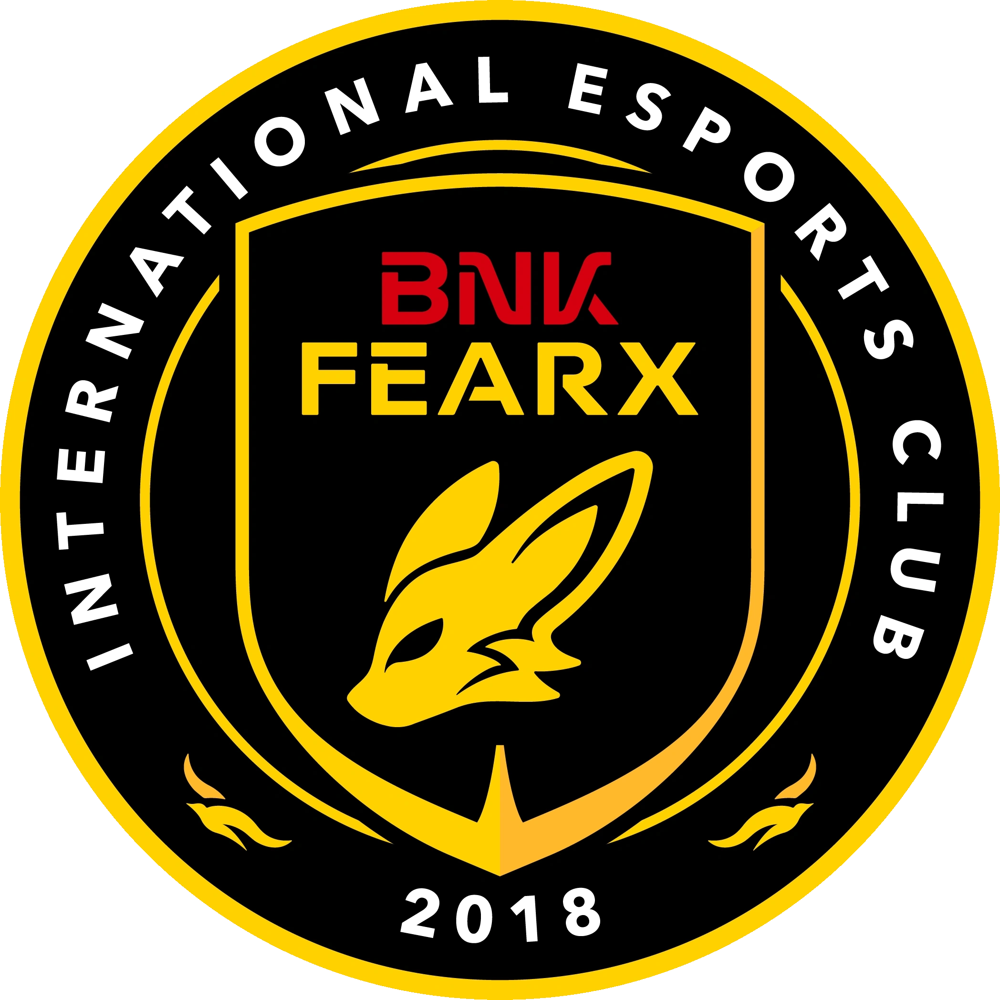

BFX is Collapsing.
Here's how to fix it.

Arguably the largest surprise from tier 1 League this season was BNK FEARX and their continuous upsets during the LCK Cup. Most notably, a convincing 3-1 series win over T1, made more impressive coming off back-to-back five-game series against DN SOOPers. Those results make the First Stand collapse all the more jarring — this is without mentioning the 0-3 start of LCK Split 1. What happened? Why did the team shift from fast-paced, calculated game plans to visually incoherent decision-making and micro?
Before delving into the changes from draft to game, distinguishing the strong points and weak points of BFX needs to be made. This is an empirical website not founded on narratives, so let's first look at a teamfight during the high point of the BFX LCK Cup run.
BFX is 2,000 gold up, but Doran already found VicLa with his ult making the fight 4v5. An additional advantage for T1 is being in position on drake, pressuring BFX to walk forwards. Good teams will always capitalize on this — they fog in the pit, on the sides, on flanks, waiting for any error to be made. Diable looks dead before any fight starts. Oner uses Wukong clone and flash while in fog of war in the drake pit; the only signal for Diable to react is a red trinket flicker milliseconds while engaging. May be a good play generally, but of course a great talent like him will stun the Wukong. It's a mildly impressive play really.
The extremely impressive part comes after. Once Oner dies after being chained CCed, Keria still finds a knockup onto Diable and he looks even more dead than before. Anivia stun is oncoming, Peyz has both summoner spells looking to clean up. The one thing 99% of pro players would not do is click forwards, yet Diable chases Peyz briefly as if he is in the advantageous position. While doing this, he dodges Faker's stun, and somehow creates more space between him and Peyz. It's impossible to call any play perfect in League of Legends — the two-dimensional plane offers too many possibilities — but Diable was as close to perfect as any human can be.
In the apex tier of professional League, one role will never be enough to cross the line though. Clear fits the same newgen weak-side archetype as PerfecT: predictable champion pools, exploitable, with decent upside. Raptor is actually great on his champs, Pantheon fits the team well in a meta with immobile bot lanes. Peyz on Jinx ended with 8 deaths after a barrage of starfalls in lane. VicLa is the wild card. He solo-kills Chovy as Akali into Azir, carries that momentum into a serviceable objective and gold lead through almost all of game time, then splatters on the concrete in the final stretch, losing BFX the game. His ceiling and his ceiling's cost are inseparable.
Kellin complements Diable greatly, they ebb and flow together as a volatile duo — exceedingly aggressive at the price of flimsy mistakes. Diable flashes in unexpectedly, Kellin understood that move 3 seconds beforehand.
That version of BFX has not shown up since. Every role besides VicLa is at the near-bottom of GD@15, every plan is incohesive and their only win since the 0-3 loss to G2 was Diable going 14-0 vs HLE. An issue I have with many teams is how lousy planning becomes once the game is an uphill battle, and the sentiment becomes amplified by BFX. The average game time as of April 11 for BFX is 30 minutes — constant fighting that snowballs into clean losses. They do not stymie the bleeding. In fact, they'll stab themselves with haste and think about the next game.
LCK is sitting in a precarious state as of now, parity is slowly approaching after GenG's loss to DK. First Stand raised an existential question: how does one win a League of Legends game? Is it through an onslaught of aggression, dives, invades winning through mechanical advantages? Is it through proactivity, cross-maps, taking every trade in small wins? BFX sits at the bottom of the totem pole now asking that question, finding a solution to their countless mistakes.
Clear is non-negotiably one of the worst top laners in the LCK. The task to absorb pressure is far easier than to deal damage and create pathways — that is why his Jax, Ambessa, and Jayce are sub .500 career-wide. LCK Cup provided stability with matchups that included Sion and K'Sante where laning is on the periphery behind teamfights. This current meta of Jayce Yorick, Gnar Renekton, Rumble Sion, all sitting in islands for 15 minutes, shows the true deviation in skill for the role. Clear is subtly or loudly losing in that timespan. Mid-season roster changes are never recommended for obvious reasons, but top lane is far more plug and play than jungle or support, so let's brainstorm.
Kangin is the LCK CL top laner for BFX, posting positive stats with a two-way playstyle in carries and tanks. An extremely simple model to find who is overperforming on teams is the damage percentage comparative to the gold percentage. Currently Kangin holds 24.9% in damage share with 21.1% gold percentage in 2026. This 3.8 point discrepancy is a big deal for roles like top lane where range is broad — sometimes it is neutralized, sometimes it is atrociously negative. The stat is an expressway to find their champion pool; 25% damage share is writing that this player has carries in his arsenal. Additionally, the start of LCK CL splits has treated Kangin well, leading laning statistics while being on a negative win team. Being top of the board in laning on a losing team is absurdly impressive, the caveat being limited sample size in games.
If BFX loses their next game to DRX on April 12th, desperation will call for any success during this bleak period. Replacing Kangin as interim top laner is a path that would not hurt BFX as they grasp for any identity, and possibly benefit them to sharpen Clear or replace him entirely.
BNK FEARX has captured me as a fan. I think Diable is a once-in-a-generation talent, and the team's rise evokes different times like Griffin's roster. That's the reason I'm writing this — to diagnose and solve this crisis.